Wegway — newsletter
Writing
Wegway is an occasional newsletter of observations on art, culture, writing, and philosophy. It carries on from Wegway Primary Culture, a zine started in 1995 that grew into a magazine giving visual artists a publishing outlet analogous to literary magazines for writers — full runs are held in the permanent collections of the National Gallery of Canada, the AGO, and several university libraries (see the C.V.).
2026
6 posts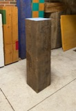
A New Piece I just finished a piece in my garage-studio. It’s acrylic…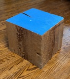
Awkward Beauty May coincidence tell the tale, All the grinding and halting,…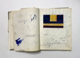
I Didn't Choose Art It just happened — At The Ontario College of Art in the 1970’s, the…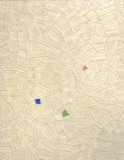
Nursery Rhyme The dish was spilled and all is lost, except it…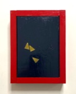
Love and Fire Crackers Steve Armstrong — When I was quite young, fire crackers were still readily…2025
22 posts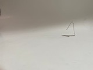
The Momentum of Giving Steve Armstrong — I have been given art for free from all the…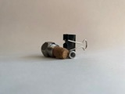
121 and 222 Two shows in 2025 — I've been quiet for a while because I've been getting…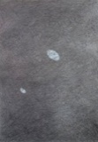
Jung Nafs Sufi Wisdom — My name is Steve, and I don’t actually exist in…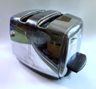
The Toaster Too late for Father's Day — was a Sunbeam Model T-20B manufactured in the 1950s. This…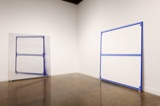
Art of my Art The sad tales of an artist — I published “Art of my Art” on a Wordpress blog…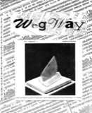
More Romanticism Wegway issue #1 — In my last post, Romanticism , I settled on the…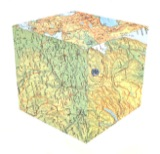
Romanticism PreModernism as PostPostModernism — Consider the dates of these people - they all could…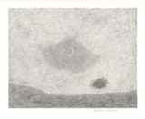
Life During Wartime Decadence, is the loss of music. It’s all around us…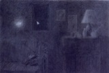
Julien Benda The Betrayal of the Intellectuals — The Duke of Alba took measures to protect the learned…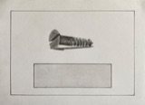
USA Today Early on, Canada lived under the protection of the British…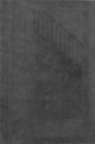
Arthur Schopenhauer The Art of Controversy — There is another trick, as soon as it is practicable,…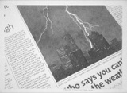
Tuesday's Quote Hans Arp — Was there ever a bigger swine than the man who…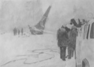
Jacques Vaché Tuesday's Quote — Art doesn't exist, of course - Then it's useless to…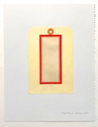
The Universal Mind Confessions of a Mystic — Thought, both rational and daydreaming, is equivalent to riding a…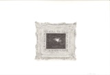
Tuesday's Quote Demetrius (Greek rhetorician probably First Century AD) — Thus a spirited and vehement expression by being expanded is…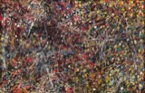
Gizzlin Maxwell and Canadian Bilingualism — Jean Paul Riopelle, Espagne , 1951, Musée National des Beaux-arts…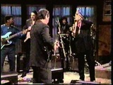
Leonard Cohen & Sonny Rollins Who by Fire — This was a performance on an unknown television show on…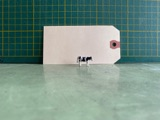
Still Life With Plastic Cow and Baggage Tag — I was having a pleasant time trying to imagine an…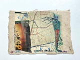
Command Drawn YYZ over the IGA — NAPO-B and I go back a long way. The piece…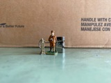
Fearless Leader Our Fate is Held by a Few Men — Our fate is in the hands of a few men…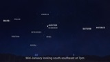
Planetary Alignment Might be worth a look — All January you’ll find Venus and Saturn in the southwest…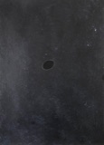
Black Holes Where Everything Becomes Nothing — Beliefs are confirmed and tailored to suit our dreams. Dismiss…2024
38 posts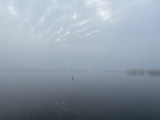
Bay Bridge Fog 10 December 2024 — image: Steve Armstrong, untitled (Bay Bridge Fog), low resolution JPEG…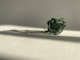
Green String and Keyserling School Days — Walking down McCall towards Queen from the Ontario College of…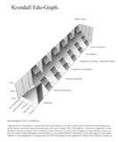
Arts Education Wm. F. Krendall — This is William F. Krendall’s contribution to Wegway 7, Fall…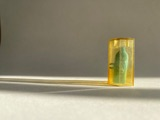
Barbie Toothpaste The Art of Still Life — Steve Armstrong, untitled (Barbie Toothpaste), low resolution JPEG of natural…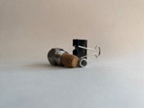
Filter The Art of Still Life — Steve Armstrong, untitled (Filter), low resolution JPEG of a natural…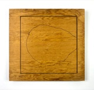
Something Gentle Seems Like a Good Day for It — Many years ago, I read a biography of Leonardo da…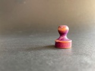
The Monopoly Men The Purple Pawn — The Purple Pawn has a dignified presence The Red One…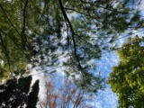
The iPhone Manifesto Sky with Clothesline — Sometimes I write, sometimes I draw, paint, or photograph. Sometimes…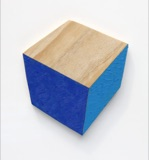
Purity The Schisms of Art — In art, just like religion, the smallest differences make the…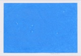
Inspiration Falling Fragments — Writing is getting little bits of language now and again.…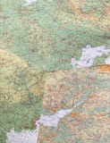
Maps Round Earth's Corners (John Donne) — are all-over narratives about an environment like a Jackson Pollock…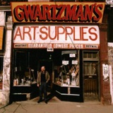
Gwartzman's Student Days — Gwartzman’s on Spadina, just up the street from the Victory…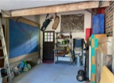
The Last Big Painting phase one — I’m about to begin what will probably be my last…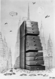
Saul Steinberg and Walter Murch Find Your Voice — Occasionally, I have the uncomfortable thought that making art is…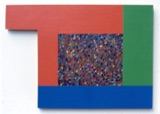
The Secret Life of an Artist Part Two — Steve Armstrong, The Infinite Choice of Primaries , acrylic, copper…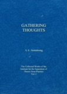
Book Launch Gathering Thoughts — In the spring of 2020 we both came down with…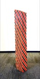
The Secret Life of an Artist Part One — There is an abandoned building near Iroquois Ontario that says,…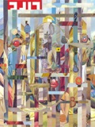
Lou Beach The Fate of Collage — I just discovered Lou Beach via a “classified ad” in…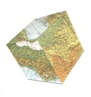
Desires We Don't Get To Choose — I have been cursed with a desire for knowledge and…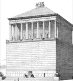
Armstrong's Bin and The Soothing of Doubt — Just as William of Ockham had his razor, I have…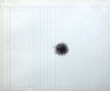
Anger is a Gift so they say — H. L. Mencken said, “No one ever went broke underestimating…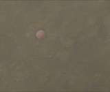
Poetry and Sex Beyond youth’s mirage — In the 1960’s, when I was a sixteen year old…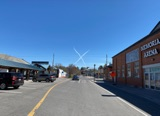
High Noon in Belleville X-Sky — This is for real, no photoshop except partially straightening some…2023
21 postsThis is the complete archive, from the first post through the present. New posts are pulled in automatically. To subscribe, visit wegway.substack.com.